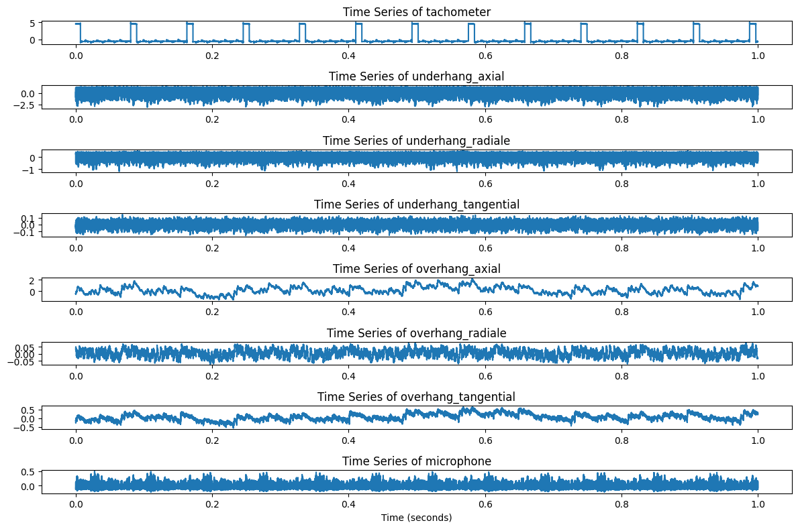
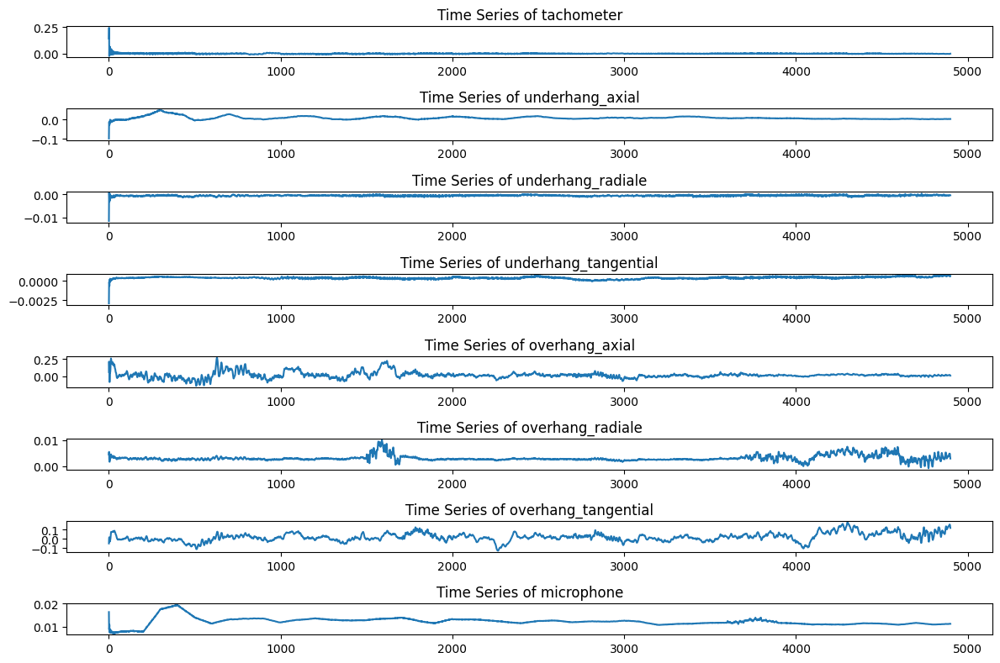
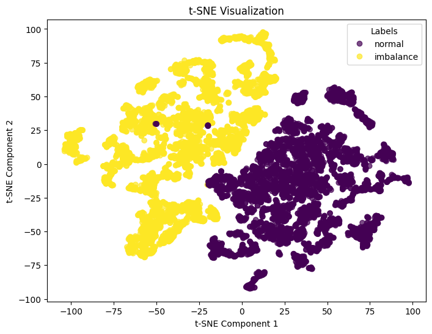
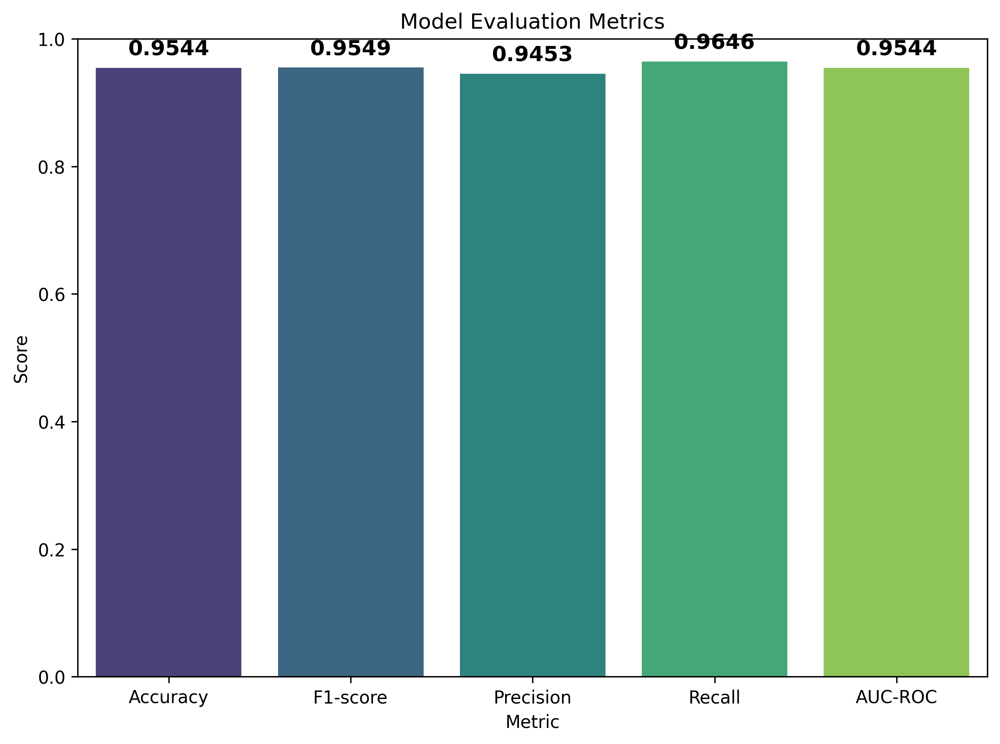

Classify Time-Series Faults with Pytorch
Classifying Machinery Faults with PyTorch: A Complete End-to-End Workflow
Predictive maintenance and fault detection are critical in industrial applications to avoid costly downtime and ensure worker safety. This blog post walks you through an entire pipeline for classifying mechanical faults using multivariate time-series data from the MAFAULDA dataset. We’ll cover every step in the workflow:
- Exploratory Data Analysis (EDA)
- Feature Engineering
- Downsampling & Rolling Mean
- Data Transformation & Visualization (t-SNE)
- Downsampling & Rolling Mean
- Building a Multi-Layer Perceptron (MLP) with PyTorch
- Custom Dataset Class
- Model Architecture & Training
- Custom Dataset Class
- Evaluation Metrics (Accuracy, F1-score, Precision, Recall, AUC-ROC)
Throughout this tutorial, you’ll see real code snippets (in Python) drawn from the repository structure below:
yurimarca-machinery-fault-classification/
├── README.md
├── environment.yml
├── figures/
├── notebooks/
│ ├── EDA.ipynb
│ ├── FeatureEngineering.ipynb
│ ├── MLP_Training.ipynb
│ └── normal_data_report.html
└── src/
└── main.pyLet’s dive in!
1. Exploratory Data Analysis (EDA)
Understanding the Data
We are dealing with vibration and microphone signals recorded from a motor simulator under two conditions:
1. Normal
2. Imbalance (faulty)
Each recording is ~5 seconds at a 50 kHz sampling rate, resulting in 250,000 samples per sensor. The dataset includes eight features:
tachometerunderhang_axialunderhang_radialeunderhang_tangentialoverhang_axialoverhang_radialeoverhang_tangentialmicrophone
The first step is to get a sense of data distributions, missing values, basic statistics, etc. In EDA.ipynb, you’ll see code like:
import pandas as pd
import numpy as np
import matplotlib.pyplot as plt
from ydata_profiling import ProfileReport
# Loading a CSV file for normal condition
col_names = [
'tachometer', 'underhang_axial', 'underhang_radiale', 'underhang_tangential',
'overhang_axial', 'overhang_radiale', 'overhang_tangential', 'microphone'
]
normal_df = pd.read_csv("path/to/some_normal.csv", names=col_names)
# Generate HTML report (ydata-profiling)
profile = ProfileReport(normal_df, title="Normal Data")
profile.to_file("normal_data_report.html")The generated report normal_data_report.html quickly reveals distributions and correlations. This helps us spot which features might be redundant or highly correlated. For instance, you might notice that microphone and underhang_radiale have high correlation, which could inform feature selection later.
Visualizing Time-Series
To visualize how signal data changes over time, we can create quick plots of 50,000 samples (1 second snippet) from each class:
def plot_timeseries(df, columns, n_samples=50000):
plt.figure(figsize=(12, len(columns)))
for i, col in enumerate(columns, 1):
plt.subplot(len(columns), 1, i)
plt.plot(df[col].values[:n_samples])
plt.title(f"Time Series of {col}")
plt.tight_layout()
plt.show()
plot_timeseries(normal_df, columns=normal_df.columns)
Observing a few thousand samples reveals distinct behaviors between normal and imbalance signals—often manifested in amplitude changes or new frequency components.
2. Feature Engineering
High-frequency time-series data can be noisy and large, so feature engineering becomes crucial. Two primary transformations were used in FeatureEngineering.ipynb and ultimately in the main pipeline:
- Downsampling: Consolidates raw data by averaging every b samples. In the repository,
b=2500was used, reducing 250,000 samples per file to just 100 samples.
- Rolling Mean: Applies a moving average (with a given window size) to smooth abrupt fluctuations and incorporate temporal context into each feature.
In FeatureEngineering.ipynb, you’ll see:
def downSampler(data, b):
"""
Downsamples the given DataFrame by averaging every 'b' rows.
"""
return data.groupby(data.index // b).mean().reset_index(drop=True)
def rolling_mean_data(df, window_size=100, columns=None):
"""
Applies a rolling mean transformation to specified columns.
"""
if columns is None:
columns = df.select_dtypes(include=[np.number]).columns
df_copy = df.copy()
df_copy[columns] = df_copy[columns].rolling(window=window_size, min_periods=1).mean()
return df_copy
# Usage:
normal_df = downSampler(normal_df, 2500)
normal_df = rolling_mean_data(normal_df, window_size=100)
t-SNE Visualization for Feature Separability
After feature transformations, we often test whether the classes (normal vs. imbalance) are more distinguishable in a compressed 2D space using t-SNE. If t-SNE shows two visually separate clusters, it’s a good sign that your features are linearly or nonlinearly separable:
from sklearn.manifold import TSNE
from sklearn.preprocessing import StandardScaler
def plot_tsne(df, label_column='label'):
features = df.select_dtypes(include=[np.number]).drop(columns=[label_column], errors='ignore')
features_scaled = StandardScaler().fit_transform(features)
tsne = TSNE(n_components=2, perplexity=30, random_state=42)
tsne_results = tsne.fit_transform(features_scaled)
# Plot
plt.figure(figsize=(8, 6))
plt.scatter(tsne_results[:, 0], tsne_results[:, 1], c=df[label_column], cmap="viridis", alpha=0.7)
plt.title("t-SNE Visualization")
plt.show()
3. Building & Training a Multi-Layer Perceptron (MLP) in PyTorch
While more sophisticated sequence models (e.g., LSTM, 1D CNNs) can be used for time-series data, a Multi-Layer Perceptron often suffices when you’ve already introduced basic temporal smoothing in your features.
3.1 The Dataset & DataLoader
In PyTorch, we create a custom Dataset class to handle how features and labels are fed to the model:
import torch
from torch.utils.data import Dataset, DataLoader
class MachineryDataset(Dataset):
def __init__(self, data, label_column='label'):
self.labels = data[label_column].values
self.features = data.drop(columns=[label_column, 'time'], errors='ignore').values.astype('float32')
def __len__(self):
return len(self.features)
def __getitem__(self, idx):
x = self.features[idx]
y = self.labels[idx]
return x, y__getitem__: Returns a single sample(features, label).__len__: Provides the total length of the dataset.
We also build a DataLoader object that batches the data and shuffles it during training:
train_dataset = MachineryDataset(all_data, label_column='label')
train_loader = DataLoader(train_dataset, batch_size=64, shuffle=True)3.2 MLP Model Architecture
A simple feed-forward neural network can be built using fully connected layers (nn.Linear):
import torch.nn as nn
class TimeSeriesMLP(nn.Module):
def __init__(self, input_dim, hidden_dim=64, num_classes=2):
super(TimeSeriesMLP, self).__init__()
self.net = nn.Sequential(
nn.Linear(input_dim, hidden_dim),
nn.ReLU(),
nn.Linear(hidden_dim, hidden_dim),
nn.ReLU(),
nn.Linear(hidden_dim, num_classes)
)
def forward(self, x):
return self.net(x)- We accept
input_dimas the number of features (after downsampling & rolling mean).
- We use two hidden layers with ReLU activation.
- The final layer maps to
num_classes=2(binary classification: normal vs. imbalance).
3.3 Training Loop
PyTorch training typically involves: 1. Forward Pass: Pass input through the model to get predictions.
2. Loss Calculation: Compute the discrepancy between predictions and labels (e.g., CrossEntropyLoss for classification).
3. Backward Pass & Optimization: Update weights using gradient descent (e.g., optimizer.step()).
In MLP_Training.ipynb, a training loop might look like:
def train_model(model, train_loader, criterion, optimizer, epochs=10, device='cpu'):
model.to(device)
for epoch in range(epochs):
model.train()
running_loss = 0.0
correct = 0
total = 0
for X, y in train_loader:
X, y = X.to(device), y.long().to(device)
optimizer.zero_grad()
outputs = model(X)
loss = criterion(outputs, y)
loss.backward()
optimizer.step()
running_loss += loss.item() * X.size(0)
# Calculate training accuracy
_, predicted = torch.max(outputs, 1)
correct += (predicted == y).sum().item()
total += y.size(0)
epoch_loss = running_loss / len(train_loader.dataset)
epoch_acc = correct / total
print(f"Epoch [{epoch+1}/{epochs}], Loss: {epoch_loss:.4f}, Accuracy: {epoch_acc:.2f}")CrossEntropyLoss()is standard for multi-class/binary classification.
- We track both loss and accuracy each epoch.
4. Putting It All Together in main.py
Finally, in src/main.py we orchestrate the entire workflow: 1. Data Ingestion & Labeling
2. Feature Engineering (Downsampling, Rolling Mean, StandardScaler)
3. Splitting (Time-series split into train/val/test sets)
4. MLP Training
5. Evaluation: Accuracy, F1, Precision, Recall, AUC-ROC
Below is a condensed snippet showing the pipeline’s main logic:
# Load normal and imbalance data
normal_dfs = load_filtered_dfs(data_path, "normal")
imbalance_dfs = load_filtered_dfs(data_path, "imbalance-6g")
# Apply augmentation (downsampling + rolling) to each DF, then concat
normal_df = pd.concat([augment_features(df) for df in normal_dfs], ignore_index=True)
imbalance_df = pd.concat([augment_features(df) for df in imbalance_dfs], ignore_index=True)
# Label the data
normal_df["label"] = 0
imbalance_df["label"] = 1
all_data = pd.concat([normal_df, imbalance_df], ignore_index=True)
# Show correlation matrix
save_correlation_matrix(all_data)
# t-SNE visualization
plot_tsne(all_data, label_column='label', output_file="../figures/tsne_visualization.png")
# Time-series split (train/val/test)
train_data, val_data, test_data = time_series_split(all_data)
# Normalize features
scaler = StandardScaler()
train_data.iloc[:, :-1] = scaler.fit_transform(train_data.iloc[:, :-1])
val_data.iloc[:, :-1] = scaler.transform(val_data.iloc[:, :-1])
test_data.iloc[:, :-1] = scaler.transform(test_data.iloc[:, :-1])
# Datasets & Loaders
train_dataset = MachineryDataset(train_data)
val_dataset = MachineryDataset(val_data)
test_dataset = MachineryDataset(test_data)
train_loader = DataLoader(train_dataset, batch_size=32, shuffle=False)
val_loader = DataLoader(val_dataset, batch_size=32, shuffle=False)
# Initialize and train MLP
model = TimeSeriesMLP(
input_dim=train_dataset.features.shape[1],
hidden_dim=3,
n_layers=2
)
history = train_model(model, train_loader, val_loader) # default epochs=50
# Evaluate
test_loader = DataLoader(test_dataset, batch_size=32, shuffle=False)
test_metrics = evaluate_model(model, test_loader)
plot_evaluation_results(test_metrics, output_file="../figures/evaluation_plot.png")Evaluation & Metrics
After training, we apply the model to the test set. For binary classification, we typically measure:
- Accuracy: Ratio of correct predictions over total.
- F1-score: Harmonic mean of precision & recall.
- Precision: Among predicted positives, how many are truly positive?
- Recall: Among all actual positives, how many did we predict correctly?
- AUC-ROC: Area under the Receiver Operating Characteristic curve (only if you have more than one class present).
Here’s how it’s done in main.py:
def evaluate_model(model, test_loader, threshold=0.5):
model.eval()
all_preds = []
all_labels = []
with torch.no_grad():
for inputs, labels in test_loader:
outputs = model(inputs).squeeze()
preds = (outputs > threshold).float()
all_preds.extend(preds.cpu().numpy())
all_labels.extend(labels.cpu().numpy())
accuracy = accuracy_score(all_labels, all_preds)
f1 = f1_score(all_labels, all_preds, zero_division=0)
precision = precision_score(all_labels, all_preds, zero_division=0)
recall = recall_score(all_labels, all_preds, zero_division=0)
auc_roc = roc_auc_score(all_labels, all_preds) if len(np.unique(all_labels)) > 1 else None
metrics = {
"Accuracy": accuracy,
"F1-score": f1,
"Precision": precision,
"Recall": recall,
"AUC-ROC": auc_roc
}
for metric, value in metrics.items():
if value is not None:
print(f"{metric}: {value:.4f}")
return metrics
Excellent performance, which suggests that even a relatively straightforward MLP can separate normal vs. imbalance classes well, thanks to feature engineering (downsampling + rolling mean).
5. Next Steps & Enhancements
- Hyperparameter Optimization
- Test different hidden layer sizes, dropout probabilities, and learning rates.
- Consider
GridSearchorBayesian Optimizationfor an automated approach.
- Test different hidden layer sizes, dropout probabilities, and learning rates.
- Include More Fault Conditions
- The MAFAULDA dataset has multiple fault types (unbalance, misalignment, bearing faults). Extending beyond just normal vs. imbalance classification can add realism.
- Sequence Models
- For a deeper time-series approach, experiment with CNNs (1D Convolutions) or LSTM architectures. Those are better at capturing sequential dependencies without relying only on rolling averages.
- Real-Time Inference
- Deploy the trained model in a streaming or edge environment for real-time fault detection in industrial settings.
Conclusion
We’ve walked through a complete pipeline for classifying mechanical faults using time-series data. The key lessons include:
- EDA is indispensable for quickly assessing data quality and distributions.
- Feature Engineering (downsampling, rolling means) can drastically reduce data size and highlight meaningful trends.
- Even a basic MLP can achieve high accuracy if the features reflect the underlying process well.
- Evaluation metrics (Accuracy, F1, Precision, Recall, AUC-ROC) are critical to understand true performance.
If you’re looking to adapt this pipeline to your own fault classification tasks—whether it’s rotating machinery, bearings, or other mechanical equipment—these concepts should be straightforward to customize. Feel free to explore the MAFAULDA dataset for your own experiments or extend it with advanced deep learning architectures.
Thanks for reading, and happy fault detecting!